Persiapan Bermain
System Requirements
- Operating System: Windows 7, 8 or 10
- Processor: 2.4 Ghz Dual-Core minimum. 3.2 Ghz Recommended
- Memory: 3 GB RAM. 4 GB recommended
- Hard Disk: 10 GB free Hard Drive Space
- Graphics Adapter: Graphics Card with 128 MB RAM. 512 MB recommended.
- Sound: DirectX 9 compatible sound device. Dedicated sound card with EAX support recommended for best experience.
- Internet: 256 kbps or faster connection required for online play
- Software: .NET Framework 4
- Input: Mouse, Keyboard
- Optional: Joystick, Headset, microphone (sangat disarankan untuk komunikasi)
Instalasi Game
PR:BF2 tidak memerlukan BF2 terinstal. PR:BF2 bekerja sebagai game standalone. Jika anda mempunyai PR:BF2 versi sebelum v1.3, anda diharuskan uninstall versi v1.3 sebelum menginstall PR:BF2 v1.6
Anda harus men-download installer penuh PR:BF2 dari website PR. Tidak akan ada persyaratan untuk menginstal Battlefield 2.
Download Full PR:BF2 v1.6 Installer
Ada 2 cara instalasi. Anda bisa menggunakan Download Assistant Application yang membuat menginstal PR:BF2 jauh lebih mudah atau anda bisa mendownload secara manual dan instal Installer melalui Torrent. Apapun metodenya, ada 2 langkah. Download dan Instal.
1) Download
Download Assistant akan mendownload installernya menggunakan protokol Torrent. Jadi pastikan protokol ini tidak diblok oleh penyedia jasa internet (ISP). Cukup unduh Download Assistant dari halaman PR:BF2 Download Section dan ikuti instruksi di dalam aplikasi.
Jika anda mendownload versi Torrent (dan sekarang menjadi Download Assistant), ini BUKAN instalasi penuh. Gunakan file .torrent kecil dengan klien BitTorrent untuk mengunduh file .iso secara lengkap. Kita merekomendasikan qBittorrent. Setelah torrent terdownload oleh program Torrent pilihan anda, akan ada folder dengan semua file instalasi, lanjut ke langkah 2 setelah anda selesai mendownload.
2) Installation Di folder yang anda download dengan Download Assistant ataupun secara manual tadi di dalamnya ada file setup.exe. Jalankan file itu untuk memulai proses instalasi. Namun dengan Download Assistant akan menginstal secara otomatis sehingga setelah mendownload seharus ada tombol untuk memulai penginstalan secara otomatis.
Ada beberapa poin:
- Dengan versi standalone yang baru, anda tidak perlu menginstal di folder Battlefield 2. Anda bisa menginstal PR:BF2 dimanapun anda inginkan.
- Jika anda punya Battlefield 2 terinstal, anda bisa terus bermain Battlefield 2 maupun bersama modnya. PR:BF2 tidak mengganggu mereka.
- PR:BF2 menyediakan update otomatis.Jadi ketika mempunyai PR:BF2 terinstal, anda bisa menggunakan installer tersebut untuk mengupdate PR:BF2 anda secara otomatis ke versi terbaru.
- PR:BF2 memiliki PR Mumble dalam instalasinya, sehingga anda tidak perlu mendownloadnya lagi.
- Jika anda tidak ingin menggunakan Torrent, anda akan menemukan mirror untuk men-download langsung dari HTTP forum kami.
Membuat Akun PR
Semenjak DICE dan EA tidak mensupport lagi BF2 pada Mei 2014, kita sekarang bisa menggunakan layanan akun PR untuk PR:BF2. Semua akun BF2 lama anda (sebelum PR:BF2 v1.2) tidak dapat dikembalikan. Sebelum menggunakan Launcher PR, anda perlu membuat akun PR agar bisa bermain online. Akun ini khusus untuk anda. Bermain secara offline tidak memerlukan Akun PR. Kita menggunakan layanan pihak ketiga untuk menghubungkan dan memverifikasi Akun PR anda. Untuk saat ini kami hanya menggunakan Steam. Anda memerlukan akun Steam atau membuat yang baru untuk ditautkan ke Akun PR anda. Saat anda membuka PR:BF2 untuk pertama kalinya, anda akan melihat jendela ini:
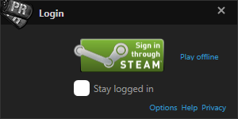
Klik tombol “Steam sign-in” untuk membuka sebuah website yang kemudian anda perlu login dengan akun Steam. Anda akan diminta oleh browser anda untuk mengizinkan Launcher PR untuk login. Tergantung pada browser Anda, ini akan terlihat mirip dengan gambar di bawah.
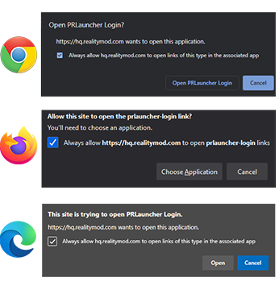
Akun PR anda akan diberikan PR Launcher Level. Level ini menunjukkan apakah akun anda asli dan bukan hanya akun sekali pakai. Server memiliki pilihan untuk menentukan level minimum yang diperlukan untuk bermain di server mereka. Untuk menentukan PR Account Level anda, sebagian pengaturan akun Steam Anda perlu dibuat publik. Anda bisa melakukan ini di Privasi Settings dari Steam. Pastikan pengaturan game details diatur menjadi publik.
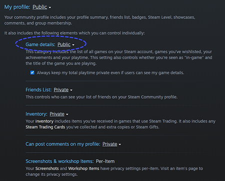
Profil Steam anda tidak perlu diatur menjadi publik ketika anda bermain PR:BF2. Hanya untuk menghitung level PR Account anda. Proses ini selesai otomatis di login pertama dan setelah itu hanya saat menghitung secara manual. Anda dapat melihat pemberitahuan privasi kami disini. Jika level akun anda tidak cukup untuk bermain di kebanyakan server, anda akan diberi peringatan di layar Launcher PR yang terlihat seperti gambar di bawah ini.
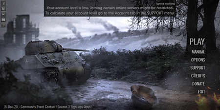
Untuk menghitung ulang PR Account Level anda, pergi ke menu SUPPORT dan buka menu / label Account. Disana anda dapat menemukan ID khusus PR Account anda serta PR Account Level anda saat ini dan tombol untuk menghitung level anda lagi. Level anda tidak bisa berkurang setelah dihitung. Anda akan memiliki level tertinggi yang anda dapat.
PR Account Level anda dapat bertambah dengan mengumpulkan XP untuk beberapa indikator. Contohnya seperti tidak mempunyai Steam VAC ban, memiliki game di steam library dan mempunyai banyak waktu bermain di dalamnya. Memberi donasi ke tim Project Reality tidak akan menambah PR Account Level anda.
Jika anda tidak ingin membuat Akun PR untuk bermain online, anda bisa memilih untuk bermain secara offline dari layar login awal.
Membuat Profil
Anda punya satu Akun PR yang unik. Tetapi, anda bisa membuat banyak profil dalam Akun PR ini. Setiap profil mempunyai nama in-game yang unik serta pengaturan dan kontrol terpisah yang tersimpan dalam komputer anda. Anda bisa mengambil kembali profil yang sudah pernah anda buat. Profil lama yang dibuat setelah PR:BF2 v1.2 dan sebelum v1.6 juga bisa didapatkan kembali dengan menggunakan nama profil dan password yang bersangkutan.
Anda bisa mengakses pengaturan profil dengan menaruh kursor di tombol Play di PR Launcher dan memilih Select Profile lalu Manage Profiles. Anda juga dapat memilih untuk membuat profil offline. Jika anda tidak login melalui Akun PR secara online, anda hanya bisa membuat dan menggunakan profil offline.
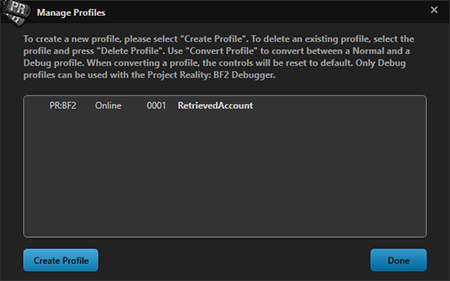
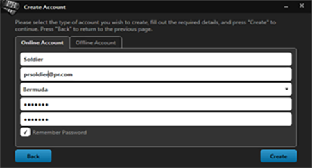
PR Launcher
Shortcut untuk Project Reality:BF2 akan dibuat di desktop setelah instalasi, klik ikon ini dua kali untuk membuka PR Launcher.
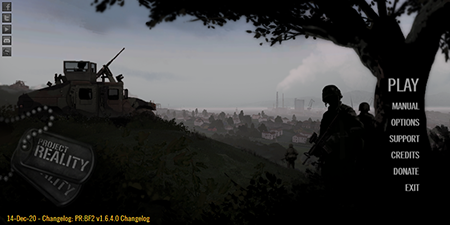
Semua opsi utama yang ditampilkan di sebelah kanan.
- Play: tombol ini akan memulai game. Jika anda mengklik tanda panah ke bawah di bagian kanan, anda mendapatkan opsi untuk memeriksa pembaruan atau memilih profil lain. Jika ada pembaruan, pembaruan tersebut akan ditampilkan jika anda menekan tombol play. Pembaruan ini akan diunduh dan diinstal secara otomatis. Proses pembaruan dan instalasi akan ditampilkan selama aplikasi masih berjalan / terbuka.
- Options: Di menu ini anda bisa mengubah pengaturan video, grafis dan audio. Ada juga opsi lainnya seperti mengubah tombol shortcut untuk PR Mumble.
- Support: menu/opsi ini Sangatlah berguna saat anda menemukan sebuah masalah. Opsi ini memberikan banyak utilitas seperti membersihkan folder cache atau memberikan anda informasi mendetail tentang spesifikasi komputer anda. Ini sangat berguna saat menghubungi tim dukungan kami. Opsi ini juga menyimpan informasi tentang Akun PR anda dan opsi untuk menghitung ulang level Akun PR anda.
- Credits: Disini anda bisa melihat seluruh tim PR:BF2 yang bekerja di game ini.
- Donate: Sebuah tautan langsung ke halaman donasi kami. Tim Project Reality membuat modifikasi ini sepenuhnya gratis untuk komunitasnya untuk diunduh dan dimainkan. Jika anda mau memberikan sebuah dukungan, tolong pertimbangkan untuk memberikan donasi ke tim kami.
- Exit: Gunakan tombol ini untuk menutup PR Launcher
Menu utama di launcher juga memberikan barisan berita di bagian bawah yang disoroti dengan warna biru berisi pengumuman untuk acara yang akan datang, kemajuan dari proses pembuatan dan developer blogs dari komunitas PR:BF2. Selain itu, anda bisa menemukan tautan ke akun sosial media kami di bagian kiri atas.
Navigasi Menu Dalam Game
- Co-operative:Anda bisa bermain PR:BF2 dengan tim berisi tentara yang dikontrol oleh komputer. Mode ini sangat berguna untuk mengenal mekanik-mekanik dan perlengkapan dalam game sebelum bergabung ke dalam permainan secara online yang kompetitif.
- Deployment:Mode utama untuk dimainkan di Project Reality. Disini anda bisa merasakan perang yang intens dengan pemain sebanyak 100 orang pemain.
- Barracks: Menu ini memberikan anda akses ke pemutar ulang melalui Battlerecorder.
- Options: Disini anda bisa mengubah pengaturan audio dan juga tata letak keyboard anda. Pengaturan video harus diubah melalui PR Launcher.
- Exit: Gunakan tombol ini untuk keluar dari game.
PR Mumble
Di dalam game, Mumble adalah program yang kami gunakan untuk berkomunikasi dengan satu sama lain di PR:BF2, yang menggantikan sistem Voice-Over-IP (VOIP) di vanilla BF2. Fitur utama PR Mumble yang unik adalah metode komunikasi utamanya ditransmisikan dalam ruang 3 dimensi, membuatnya terdengar dari suatu arah dan berjarak. Ini disebut Local. Ini berarti bahwa semua pemain dalam tim anda bisa berbicara dengan satu sama lain jika mereka cukup dekat, dan anda bisa mendengar dari arah mana mereka berbicara, demikian pula anda bisa menebak seberapa jauh mereka, seperti di dunia nyata.
Setelah bergabung dengan sebuah squad anda akan mendapatkan akses ke Jaringan Radio squad, yang memungkinkan anda untuk mengirimkan transmisi ke pemain lain yang ada di squad anda tak peduli dimanapun dia di peta. Squad Leader juga memiliki akses ke Jaringan Radio tambahan yang memungkinkannya untuk berkomunikasi secara langsung dengan Commander, secara global ke Squad Leader-Squad Leader lain, dan langsung ke Squad Leader lain secara individu. Saat menggunakan sebuah Radio Net, suara penanda transmisi akan terdengar saat mengaktifkan dan mematikan radio itu (Yang bisa di aktifkan di pengaturan audio di Launcher). tombol default untuk mengirim transmisi lewat Mumble adalah sebagai berikut:
- Local speech (B atau H): anda berbicara dengan pemain lain di radius ruang 3 Dimensi di sekitar anda.
- Squad radio (V atau Num 0): anda bisa berbicara dengan squad anda, dimanapun anda berada.
- Radio Squad Leader ke semua Squad Leader lain (*): anda bisa berbicara dengan semua squad leader lain disaat yang bersamaan. Jaringan Radio ini juga tersedia untuk digunakan oleh Commander dengan pintasan yang sama.
- Radio Squad Leader ke Squad Leader lain yang spesifik (Num 1 - Num 9): anda bisa berbicara ke salah satu Squad Leader lain di tim anda. Channel ini juga tersedia untuk digunakan oleh Commander dengan pintasan yang sama.
- Radio Squad Leader ke Commander (/): anda bisa berbicara dengan Commander secara personal.
PR Mumble terinstal bersamaan dengan PR:BF2. Mumble berjalan bersamaan dengan instalasi game dan melakukan semua tugas di sisi client secara otomatis untuk anda seperti memulai dan menghubungkan anda ke server mumble yang benar. Pemain memiliki pilihan untuk mengubah pengaturan komunikasi mereka bagaimanapun mereka suka seperti versi sebelumnya. Hal ini termasuk perangkat input dan output, volume dan pintasan keyboard. Dua fitur yang paling penting adalah default: Local Channel (H) dan Jaringan Radio squad (0 di Numpad). Pintasan utama keyboard juga bisa diganti melalui PR Launcher melalui menu “option” di aplikasi PR Mumble.
Sangat direkomendasikan bagi anda untuk memeriksa panel pengaturan utama secara langsung dalam aplikasi Mumble untuk memastikan semua pengaturan sudah benar. Untuk melakukan ini, cari Dogtags PR di bagian system tray di sebelah jam sistem Windows (PR harus berjalan), klik icon ini untuk membuka Mumble lalu carilah menu “settings” di bagian atas. Setelah itu panel settings akan muncul dan anda bisa mengubah perangkat input dan output anda dan mengubah pintasan keyboard dan pengaturan lainnya.
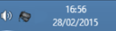
PR Mumble juga berintegrasi dengan tampilan HUD BF2. Selama permainan anda bisa melihat nama pemain yang berbicara, setiap warna menunjukan channel mana yang mereka transmisikan , yang ditampilkan di bagian kiri bawah layar. Di bagian pojok kanan bawah mumble juga mengindikasikan di channel mana anda mentransmisi dengan warna yang berbeda tergantung dari channel mana yang anda gunakan. Ini juga menunjukan apakah mikrofon atau speaker anda dibisukan, dan apakah ada masalah sambungan di client mumble.
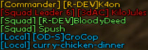
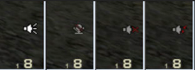
Transmisi Mic/ Speaker yang dibisukan/ Dibisukan/ Terputus
Troubleshooting
- PR:BF2 akan memverifikasi file sebelum anda memulai game. Anda tidak bisa bermain secara online dengan file yang sudah dimodifikasi. Tetapi, Anda masih bisa bermain secara offline.
- PR:BF2 harus dijalankan dengan menggunakan PR Launcher. Menjalankan BF2.EXE atau PR:BF2.EXE tidak akan bekerja.
- Selain server browser bawaan anda bisa menggunakan PRSpy yang berbasis web untuk melihat dan bergabung dengan server PR:BF2. PRSpy juga memiliki fitur daftar teman yang memudahkan anda mencari teman anda.
Tautan ke PRSPY: https://realitymod.com/prspy/
- Jika server yang ingin anda masuki sudah penuh anda akan mendapatkan pilihan untuk menggunakan Auto Deploy. Pilih server, klik “SERVER INFO” lalu “AUTO DEPLOY”. Lalu sebuah pesan akan muncul yang bakal menjelaskan tahap selanjutnya. Lalu anda tinggal duduk manis dan menunggu untuk terhubungkan saat ada slot yang terbuka.
- Support Menu di PR Launcher bisa sangat berguna. Bisa digunakan untuk mendapatkan semua informasi sistem komputer anda untuk disalin dan ditempel di forum Support kami saat anda membutuhkan bantuan. Ini juga bisa memberikan anda sebuah CD-Key Hash.
Berikut adalah beberapa tautan forum dari realitymod.com yang bisa digunakan untuk berbagai hal umum:
- PR:BF2 Bugs sub-forum untuk melaporkan Bug.
- PR:BF2 Feedback sub-forum untuk membuat post berisi umpan balik tentang PR:BF2.
- PR:BF2 Support forum untuk semua masalah yang berkaitan dengan menjalankan dan instalasi game dan error yang anda temukan.
- General Technical Support untuk semua pertanyaan teknis anda.
- PR In-Game Tactics and Strategies akan membantu anda lebih lanjut dari manual ini untuk menguasai semua elemen yang ada di PR:BF2 dengan tutorial dan panduan yang dibuat oleh komunitas.
Default Game Kontrol
Kontrol Umum
| Key | Fungsi |
|---|---|
| Caps Lock/Home | Pemilihan kit, pemilihan squad dan menu Map |
| Tab | Menampilkan Scoreboard |
| Print Screen | Mengambil Screenshot |
| M | Menampilkan/menyembunyikan Overlay Peta |
| N | Mengganti level perbesaran minimap |
| Q | Memunculkan radio-rose utama |
| T | Memunculkan radio-rose tambahan |
| Left alt | Menampilkan/menyembunyikan penanda 3D (hanya muncul dalam 50 meter) |
| C | Toggle BUIS / Mengganti camera |
| End/grave | Console |
Persenjataan
| Key | Fungsi |
|---|---|
| G | Mengambil kit |
| Left Mouse | Tembak |
| Right Mouse | Tembakan senjata tambahan atau Mengubah Alat Bidik |
| R | Mengisi Ulang |
| F | Menrubah Senjata |
| 1-9 | Memilih Senjata |
Pergerakan
| Key | Function |
|---|---|
| E | Masuk / keluar kendaraan atau emplacement |
| WSAD | Pergerakan Dasar |
| Left Ctrl | Jongkok (tahan) |
| Z | Tiarap |
| Space | Lompat |
| Left Shift | Berlari/Tambaham Kecepatan Kendaraan |
Kendaraan
| Key | Function |
|---|---|
| F1-F8 | Mengganti posisi duduk dalam kendaraan |
| X | Menambahkan pembesaran/suar |
| 6-9 | Posisi Kamera (hanya Helikopter dan Pesawat) |
| R | Mengisi Ulang |
| F | Menganti Senjata |
| 1-9 | Memilih Senjata |
Komunikasi
| Key | Function |
|---|---|
| J | Chat text untuk semua pemain |
| K | Chat text hanya untuk tim anda |
| L | Chat text hanya untuk squad anda |
| Page Up | Terima Permintaan |
| Page Down | Tolak Permintaan |
| B or H | PR Mumble Proximity Local Channel |
| V or 0 (numpad) | PR Mumble Radio Channel squad |
| 1-9 (numpad) | PR Mumble Channel Squad Leader Individu |
| *(numpad) | PR Mumble Channel ke Semua Squad Leader |
| /(numpad) | PR Mumble Channel Radio Commander |
Mumble Keys
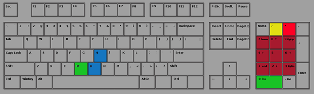